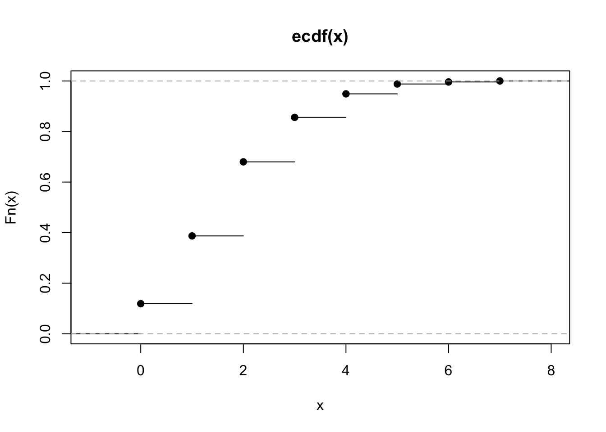
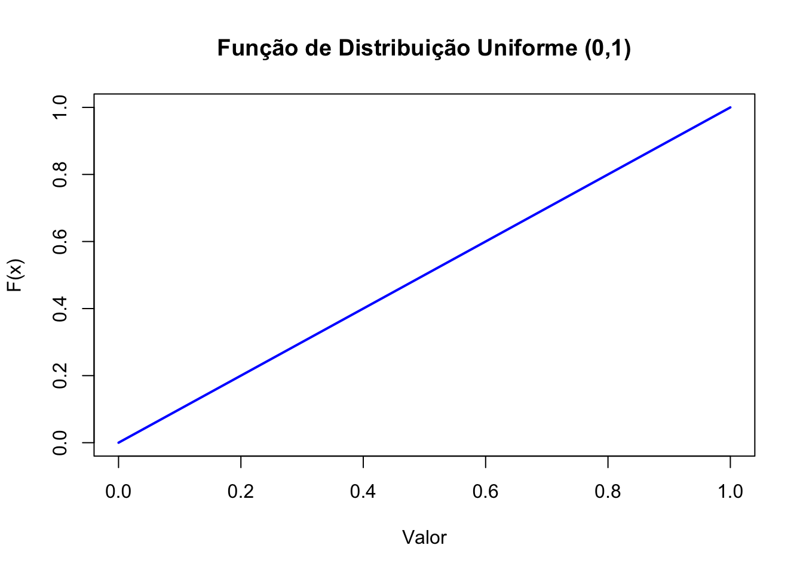

Capítulo 21 Distribuições de Probabilidade
No R temos acesso as mais comuns distribuições univariadas. Todas as funções tem as seguintes formas:
| Função | Descrição |
|---|---|
| pnome( …) | função de distribuição |
| dnome( …) | função de probabilidade ou densidade de probabilidade |
| qnome( …) | calcula o quantil correspondente a uma dada probabilidade |
| rnome( …) | retorna uma amostra aleatória da distribuição |
o nome é uma abreviatura do nome usual da distribuição (binom,
geom, pois, unif, exp, norm, …).
Exempo 1: Simule o lançamento de três moedas honestas e a contagem do número de caras X.
(a) Use a sua simulação para estimar \(P(X=1)\) e \(E(X)\).
(b) Modifique a alínea anterior para permitir uma moeda viciada onde \(P(cara)=3/4\).
set.seed(123)
n <- 10000
sim1 <- numeric(n)
sim2 <- numeric(n)
for (i in 1:n) {
moedas <- sample(0:1,3,replace=T)
sim1[i] <- if (sum(moedas)==1) 1 else 0
sim2[i] <- sum(moedas)
}
# P(X=1)
mean(sim1)
## [1] 0.3821
# E(X)
mean(sim2)
## [1] 1.4928set.seed(123)
n <- 10000
sim1 <- numeric(n)
sim2 <- numeric(n)
for (i in 1:n) {
moedas <- sample(c(0,1),3,prob=c(1/4,3/4),replace=T)
sim1[i] <- if (sum(moedas)==1) 1 else 0
sim2[i] <- sum(moedas)
}
# P(X=1)
mean(sim1)
## [1] 0.1384
# E(X)
mean(sim2)
## [1] 2.2503Sabemos também que \(X-\) número de caras no lançamneto de três moedas honestas tem distribuição \(Binomial(n=3,p=0.5)\). Assim, podemos resolver a questão da seguinte maneira
set.seed(123)
valores <- rbinom(10000,3,0.5)
# P(X=1)
sum(valores == 1)/length(valores)
## [1] 0.383
# E(X)
sum(valores)/length(valores)
## [1] 1.4897
mean(valores)
## [1] 1.4897No segundo caso teremos \(X \sim Binomial(n=3,p=3/4)\).
set.seed(123)
valores <- rbinom(10000,3,3/4)
# P(X=1)
sum(valores == 1)/length(valores)
## [1] 0.1365
# E(X)
sum(valores)/length(valores)
## [1] 2.2558
mean(valores)
## [1] 2.2558Exemplo 2: O tempo até a chegada de um autocarro tem uma distribuição exponencial com média de 30 minutos.
(a) Use o comando rexp() para simular a probabilidade do autocarro
chegar nos primeiros 20 minutos.
(b) Use o comando pexp() para comparar com a probabilidade exata.
set.seed(123)
valores <- rexp(10000, 1/30)
# Probabilidade P(X <=20)
sum( valores < 20)/length(valores)
## [1] 0.4832
# Probabilidade exata
pexp(20, 1/30)
## [1] 0.4865829Exemplo 3: As cartas são retiradas de um baralho padrão, com reposição, até que um ás apareça. Simule a média e a variância do número de cartas necessárias.
set.seed(123)
n <- 10000
# Denote os ases por 1,2,3,4
simlist <- numeric(n)
for (i in 1:n) {
ct <- 0
as <- 0
while (as == 0) {
carta <- sample(1:52,1,replace=T)
ct <- ct + 1
if (carta <= 4){
as <- 1
}
}
simlist[i] <- ct
}
mean(simlist)
## [1] 12.8081
var(simlist)
## [1] 147.5318Podemos notar aqui tambném que \(X-\) número de provas de Bernoulli até o primeiro sucesso (aparecer um ás), que tem distribuição \(Geométrica(p=4/52)\). Lembre que o R trabalha com a geométrica como sendo \(X-\) número de insucessos até o primeiro sucesso.
set.seed(123)
valores <- rgeom(10000, 4/52) + 1
# Média e variância
mean(valores)
## [1] 13.0108
var(valores)
## [1] 152.033521.1 Função de distribuição empírica
A função de distribuição empírica é uma função de distribuição acumulada que descreve a proporção ou contagem de observações em um conjunto de dados que são menores ou iguais a um determinado valor. É uma ferramenta útil para visualizar a distribuição de dados observados e comparar distribuições amostrais.
É uma função definida para todo número real \(x\) e que para cada \(x\) dá a proporção de elementos da amostra menores ou iguais a \(x\): \[F_{n}(x) = \frac{\# \, \text{observações} \leq x}{n}\]
Para construir a função de distribuição empírica precisamos primeiramente ordenar os dados em ordem crescente: \((x_{(1)},\ldots,x_{(n)})\)
A definição da função de distribuição empírica é \[F_{n}(x) = \begin{cases} 0, & \quad x < x_{(1)} \\ \frac{i}{n}, & \quad x_{(i)}\leq x < x_{(i+1)}, \quad i=1,\ldots,n-1 \\ 1, & \quad x\geq x_{(n)} \end{cases}\]
Passo a passo para a construção da função
- Inicie desenhando a função do valor mais à esquerda para o mais à direita.
- Atribua o valor 0 para todos os valores menores que o menor valor da amostra, \(x_{(1)}\) .
- Atribua o valor \(\frac{1}{n}\) para o intervalo entre \(x_{(1)}\) e \(x_{(2)}\), o valor \(\frac{2}{n}\) para o intervalo entre \(x_{(2)}\) e \(x_{(3)}\), e assim por diante, até atingir todos os valores da amostra.
- Para valores iguais ou superiores ao maior valor da amostra, \(x_{(n)}\), a função tomará o valor 1.
- Se um valor na amostra se repetir \(k\) vezes, o salto da função para esse ponto será \(\frac{k}{n}\), em vez de \(\frac{1}{n}\).
Matematicamente, para uma amostra de tamanho \(n\) , a função de distribuição empírica \(F_n(x)\) é definida como:
\(F_n(x) = \frac{1}{n} \sum_{i=1}^n \mathbb{I}(X_i \leq x)\)
onde:
- \(\mathbb{I}(X_i \leq x)\) é uma função indicadora que vale 1 se \(X_i \leq x\), e 0 caso contrário.
- \(n\) é o número total de observações.
- \(X_i\) são os valores observados na amostra.
21.1.1 Função de distribuição empírica no R, função ecdf()
A função ecdf() no R é usada para calcular a função de distribuição
empírica (Empirical Cumulative Distribution Function - ECDF) de um
conjunto de dados.
# Conjunto de dados
dados <- c(3, 1, 4, 1, 5, 9, 2, 6, 5, 3, 5)
# Calcular a ECDF usando a função ecdf()
Fn <- ecdf(dados)
# Plotar a ECDF usando a função ecdf()
plot(Fn, main = "Função de Distribuição Empírica", xlab = "x", ylab = "Fn(x)", col = "blue", lwd = 2)
Exemplo 1: Resolva o exemplo 1 usando a função de distribuição empírica.
set.seed(123)
valores <- rexp(10000, 1/30)
# Função de distribuição empírica
Fn <- ecdf(valores)
# Probabilidade P(X<=20)
Fn(20)
## [1] 0.4832
# Probabilidade exata
pexp(20, 1/30)
## [1] 0.4865829Modelos Teóricos Discretos
Um modelo probabilístico teórico discreto é uma representação matemática utilizada para descrever fenómenos onde as variáveis aleatórias assumem apenas valores isolados (discretos) num conjunto finito ou infinito enumerável.
O modelo define a distribuição de probabilidades associada a cada possível valor da variável, ou seja, especifica a probabilidade de cada evento ocorrer.
21.2 Distribuição Uniforme Discreta
Definição: A variável aleatória \(X\) diz-se ter distribuição uniforme discreta no conjunto \(\{x_1, x_2, \dots, x_n\}\) se sua função massa de probabilida (f.mp.) for dada por
\[ P(X = x) = \begin{cases} \frac{1}{n}, & \text{se } x = x_1, \dots, x_n \\ 0, & \text{caso contrário} \end{cases} \]
Notação
- \(X \sim \text{Uniforme Discreta} (\{x_1, x_2, \dots, x_n\})\)
- \(E(X) = \frac{1}{n} \sum_{i=1}^{n} x_i = \frac{n+1}{2}\)
- \(V(X) = \left(\frac{1}{n} \sum_{i=1}^{n} x_i^2\right) - \left(\frac{1}{n} \sum_{i=1}^{n} x_i \right)^2 = \frac{n^2 - 1}{12}\)
Esta distribuição é razoável quando a variável aleatória discreta toma \(n\) valores distintos, todos com a mesma probabilidade.
Não há entre as funções básicas do R uma função específica para a distribuição uniforme discreta, provavelmente devido a sua simplicidade, embora algumas outras funções possam ser usadas. Por exemplo para sortear números pode-se usar sample(), como no exemplo a seguir onde são sorteados 15 valores de uma uniforme discreta com valores (inteiros) entre 1 e 10 (\(X\sim \text{Uniforme Discreta}(\{1,\ldots,10\})\)).
21.2.1 Exercícios
1. Crie uma variável aleatória uniforme discreta \(X\) com valores possíveis de 1 a 10.
- Simule 1000 realizações de \(X\).
- Verifique se a frequência relativa de cada valor aproxima-se da probabilidade teórica \(P(X = x) = \frac{1}{10}\).
- Visualize os resultados com um gráfico de barras.
2. Defina uma variável aleatória uniforme discreta \(X\) com valores possíveis de 5 a 15.
- Calcule a esperança \(\mathbb{E}[X]\) e a variância \(\text{Var}(X)\) da variável.
- Simule 10.000 realizações de \(X\) e compare os valores empíricos da média e variância com os valores teóricos.
3. Considere duas variáveis aleatórias uniformes discretas independentes, \(X\) e \(Y\) , com valores possíveis de 1 a 6 (como em um par de dados).
- Gere 5000 pares de valores para \(X\) e \(Y\).
- Calcule a média e a variância da soma \(Z = X + Y\).
- Calcule a probabilidade empírica de que \(Z > 8\).
4. Defina uma variável aleatória uniforme discreta \(X\) com valores possíveis de -3 a 3.
- Crie uma nova variável aleatória \(Y = X^2 + 2X\).
- Simule 5000 valores para \(X\) e calcule a esperança \(\mathbb{E}[Y]\) e a variância \(\text{Var}(Y)\).
5. Defina uma variável aleatória uniforme discreta \(X\) com valores possíveis de -5 a 5.
- Crie uma nova variável \(Y = 3X^3 - 2X^2 + X\).
- Simule 5000 valores de \(X\) e calcule:
- A média empírica de \(Y\).
- A proporção de valores de \(Y\) que são positivos.
21.3 Distribuição de Bernoulli
Definição: Uma experiência aleatória diz-se uma prova de Bernoulli se possuir apenas dois resultados possíveis
um sucesso \(A\), que ocorre com probabilidade \(p\) (\(0\leq p \leq 1\));
um insucesso \(\bar{A}\), que ocorre com probabilidade \(1-p\).
Exemplos
- Lançar uma moeda e observar se o resultado é “cara” ou “coroa”.
- Examinar uma amostra de rocha para verificar a presença de fósseis.
- Realizar uma perfuração para verificar a presença de petróleo num local específico.
Definição: A variável aleatória discreta \(X\), que representa o “número de sucessos numa prova de Bernoulli”, diz-se com distribuição de Bernoulli com parâmetro \(p\) e possui f.m.p. dada por
\[ P(X = x) = \begin{cases} p, & \text{se } x = 1 \\ 1 - p, & \text{se } x = 0 \\ 0, & \text{caso contrário} \end{cases} \]
ou, de forma equivalente,
\[ P(X = x) = \begin{cases} p^x (1 - p)^{1 - x}, & x = 0, 1 \\ 0, & \text{caso contrário} \end{cases} \]
Notação
- \(X \sim \text{Bernoulli}(p)\)
- \(p = P(\text{Sucesso})\)
- \(E(X) = p\)
- \(V(X) = p(1 - p)\)
21.3.1 Cálculo de probabilidades
Seja \(X \sim \text{Bernoulli}(p=0.5)\).
\(P(X=0) \to\) dbinom(x=0, size=1, prob=0.5) = 0.5
\(P(X=1) \to\) dbinom(x=1, size=1, prob=0.5) = 0.5
\(P(X \leq 1) \to\) pbinom(q=1, size=1, prob=0.5) = 1
\(P(X>0) \to\) pbinom(q=0, size=1, prob=0.5, lower.tail=FALSE) = 0.5
Amostra aleatória de dimensão 5: rbinom(n = 5, size = 1, prob = 0.5) = 0 1 0 1 1
21.3.2 Exercícios
1. Considere a experiência aleatória que consiste em lançar uma moeda não viciada e observar a face que fica voltada para cima. Sendo o objetivo verificar se sai “cara”, defina-se a variável aleatória
\[X - \text{número de vezes, em 1 lançamento, que sai cara}\]
Simule a situação descrita, determinando a percentagem de vezes em que saiu cara, para um número total de lançamentos: \(n_1 = 5\), \(n_2=10\), \(n_3=100\) e \(n_4=1000\).
Determine, para cada amostra, o valor da média e da variância. Compare com os valores de \(E(X)\) e \(V(X)\).
2. Considere uma variável aleatória \(X\) com distribuição de Bernoulli, onde \(P(X = 1) = 0.7\) e \(P(X = 0) = 0.3\).
- Simule 1000 valores de X .
- Calcule a frequência relativa de \(X = 1\) e \(X = 0\) na amostra.
- Compare os resultados empíricos com as probabilidades teóricas.
3. Defina uma variável de Bernoulli \(X\) com \(P(X = 1) = 0.4\).
- Simule 10.000 valores de \(X\).
- Calcule a média empírica de \(X\) e compare com sua esperança teórica \(\mathbb{E}[X] = p\).
- Calcule a variância empírica e compare com a fórmula teórica \(\text{Var}(X) = p(1 - p)\).
4. Considere 5 variáveis \(X_1, X_2, \ldots, X_5\), cada uma com distribuição de Bernoulli \(P(X = 1) = 0.5\).
- Simule 5000 realizações de cada variável.
- Calcule a soma \(S = X_1 + X_2 + \cdots + X_5\).
- Verifique a frequência relativa de cada valor possível de \(S\) (de 0 a 5) e compare com a distribuição binomial teórica. Use
dbinom(x = 0:5, size = 5, prob = 0.5).
21.4 Distribuição Binomial
Definição: A variável aleatória discreta \(X\), que representa o “número de sucessos num conjunto de \(n\) provas de Bernoulli independentes com probabilidade de sucesso comum e igual a \(p\)”, diz-se com distribuição binomial de parâmetros \((n, p)\) e possui f.m.p. dada por
\[ P(X = x) = \begin{cases} \binom{n}{x} p^x (1 - p)^{n - x}, & x = 0, 1, 2, \ldots, n \\ 0, & \text{caso contrário} \end{cases} \]
onde
\[ \binom{n}{x} = C_x^n = \frac{n!}{(n - x)! \, x!}. \]
Esta fórmula representa a probabilidade de obter exatamente \(x\) sucessos em \(n\) tentativas, com probabilidade \(p\) de sucesso em cada tentativa.
Notação
- \(X \sim \text{Binomial}(n,p)\)
- \(p = P(\text{sucesso})\)
- \(E(X) = np\)
- \(V(X) = np(1-p)\)
21.4.1 Cálculo de probabilidades
Seja \(X\sim\text{Binomial}(n=20, p=0.1)\).
\(P(X = 4) \to\) dbinom(x=4, size=20, prob=0.1) = 0.08977883
\(P(X\leq 4) \to\) pbinom(q=4, size=20, prob=0.1) = 0.9568255
\(P(X > 4)\to\)
pbinom(q=4, size=20, prob=0.1, lower.tail=FALSE)= 0.0431745
Amostra aleatória de dimensão 5: rbinom(n=5, size=20, prob=0.1)= 0 1 1 4 0
21.4.2 Função massa de probabilidade (teórica)
# Simulação de Variáveis aleatórias
# Função massa de probabilidade Binomial(n,p)
n <- 20
p <- 0.1
x <- 0:20
teorico <- data.frame(x = x, y=dbinom(x, size = n, prob = p))
plot(teorico$x, teorico$y,
main = "Binomial(n=20, p=0.1)",
xlab = "Número de sucessos",
ylab = "Probabilidades",
pch = 19,
col = "blue")
grid(nx=21, ny=NULL)
21.4.3 Função massa de probabilidade (simulação)
set.seed(1234)
n <- 20
p <- 0.1
k <- 1000 # número de simulações
dados <- rbinom(k, size = n, prob = p)
frequencia_relativa <- table(dados)/length(dados)
barplot(frequencia_relativa,
main = "Geração de números aleatórios de Bi(20,0.1)",
col = "lightblue",
xlab = "Número de sucessos",
ylab = "Frequência relativa",
ylim = c(0,0.3))
grid()
21.4.4 Comparação
set.seed(1234)
n <- 20
p <- 0.1
k <- 1000 # número de simulações
dados <- rbinom(k, size = n, prob = p)
frequencia_relativa <- table(dados)/length(dados)
teorico <- data.frame(x = 0:n, y=dbinom(0:n, size = n, prob = p))
barplot(frequencia_relativa,
main = "Geração de números aleatórios de Bi(20,0.1)",
col = "lightblue",
xlab = "Número de sucessos",
ylab = "Frequência relativa",
xlim = c(0,20),
ylim = c(-0.01,0.3))
points(teorico$x, teorico$y,
col = "magenta",
pch = 19)
grid()
21.4.5 Função de distribuição
# Definir os parâmetros da distribuição binomial
n <- 20 # Número de tentativas
p <- 0.1 # Probabilidade de sucesso
# Valores possíveis de sucessos (0 a n)
x <- 0:n
# Calcular a FD
cdf_values <- pbinom(x, size = n, prob = p)
# Plotar a FD
plot(x, cdf_values, type = "s", lwd = 2, col = "blue",
xlab = "Número de Sucessos", ylab = "F(x)",
main = "Função de Distribuição Acumulada da Binomial(n = 20, p = 0.1)")
21.4.6 Função de distribuição empírica
# Definir os parâmetros da distribuição binomial
n <- 20 # Número de tentativas
p <- 0.1 # Probabilidade de sucesso
set.seed(1234)
# Amostra aleatória de dimensão 1000
amostra <- rbinom(1000,size = n, prob = p)
# Distribuição empírica
Fn <- ecdf(amostra)
# Plotar CDF
plot(Fn, main = "Função de Distribuição Empírica", xlab = "x",
ylab = "Fn(x)", col = "blue")

Cálculo de probabilidade: Seja \(X \sim \text{Binomial}(n=20, p=0.1)\).
\(P(X \leq 4) =\) pbinom(4,20,0.1) = 0.9568255
\(P(X \leq 4) \approx\) Fn(4) = 0.956
21.4.7 Exercícios
1. Considere que você está realizando 10 lançamentos de uma moeda justa (\(p = 0.5\)).
- Calcule a probabilidade de obter exatamente 6 caras.
- Calcule a probabilidade de obter no máximo 4 caras.
- Calcule a probabilidade de obter mais de 7 caras.
2. Um dado equilibrado é lançado 12 vezes. O sucesso é definido como “tirar um 6” (\(p = \frac{1}{6}\)).
- Calcule a probabilidade de tirar no máximo cinco 6.
- Gere uma amostra de 1000 experimentos e registre o número de sucessos em cada experimento.
- Faça um gráfico de barras de frequência relativa associado aos valores amostrais. Sobreponha no gráfico a distribuição de probabilidade de \(X\).
- Use a função de distribuição empírica para estimar a probabilidade da alínea (a) e compare com o valor teórico.
- Calcule a média e a variância da amostra.
- Compare os resultados com os valores teóricos \(\mathbb{E}[X] = np\) e \(\text{V}(X) = np(1-p)\).
3. Considere a experiência aleatória que consiste em lançar uma moeda não viciada e observar a face que fica voltada para cima. Suponha que a experiência é realizada 7 vezes, sendo o objetivo verificar se sai “cara”. Defina-se a variável aleatória
\[X - \text{número de vezes, em 7 lançamentos, que sai cara}\]
Calcule a probabilidade de, em 7 lançamentos, sair 2 vezes cara.
Simule a situação descrita para um número total de repetições da experiência: \(n_1=5\), \(n_2=10\), \(n_3=100\) e \(n_4=1000\). Para cada caso, determine a percentagem de casos em que saíram 3 vezes cara.
Determine, para cada amostra, o valor da média e da variância. Compare com os valores de \(E(X)\) e \(V(X)\).
4. Um teste de múltipla escolha tem 10 questões, e cada questão tem 4 alternativas, sendo apenas uma correta (\(p = 0.25\)).
- Calcule a probabilidade de acertar exatamente \(k\) questões, para \(k = 0, 1, \ldots, 10\).
- Faça um gráfico para visualizar a distribuição de probabilidades.
- Identifique o valor de \(k\) que tem maior probabilidade.
5. Um time de basquete tem uma probabilidade de acerto de 0.6 em cada lance livre. Durante um jogo, o time tenta 15 lances livres.
- Calcule a probabilidade de acertar exatamente 9 lances livres.
- Calcule a probabilidade de acertar entre 8 e 12 (inclusive).
- Gere uma amostra de 500 jogos e estime a proporção de jogos em que o time acerta entre 8 e 12 lances livres.
6. Em um processo de fabricação, uma variável aleatória \(X\) representa o número de peças defeituosas em um lote de 40 peças. A probabilidade de uma peça ser defeituosa é \(p = 0.05\).
- Usando o R e fixando a semente em 123, gere uma amostra aleatória de 10.000 observações de \(X\).
- Conte a frequência de lotes com exatamente 2 peças defeituosas.
- Calcule a proporção de lotes com exatamente 2 peças defeituosas e compare com a probabilidade teórica \(P(X = 2)\) , onde \(X \sim \text{Binomial}(40, 0.05)\).
7. Em uma loja, a probabilidade de um cliente fazer uma compra é \(p = 0.3\). Suponha que 25 clientes entram na loja em um determinado período. A variável aleatória \(X\) representa o número de clientes que fazem uma compra.
- Usando R e fixando a semente em 456, gere uma amostra aleatória de 5.000 observações de \(X\).
- Conte a frequência de períodos em que pelo menos 10 clientes fizeram compras.
- Calcule a proporção de períodos em que pelo menos 10 clientes fizeram compras e compare com a probabilidade teórica \(P(X \geq 10)\), onde \(X \sim \text{Binomial}(25, 0.3)\).
- Use a função de distribuição empírica para estimar a probabilidade de pelo menos 10 clientes fazerem compras e compare com o valor teórico.
- Encontre o número médio de clientes que fizeram compras na amostra gerada.
- Compare a média amostral com o valor esperado teórico de \(\mathbb{E}[X]\).
8. O número de acertos num alvo em 30 tentativas onde a probabilidade de acerto é 0.4, é modelado por uma variável aleatória \(X\) com distruibuição Binomial de parâmetros \(n=30\) e \(p=0.4\). Usando o R e fixando a semente em 123, gere uma amostra de dimensão \(n=700\) dessa variável. Para essa amostra:
Faça um gráfico de barras de frequências relativas associada aos valores amostrais. Sobreponha no gráfico a distribuição de probabilidade de \(X\).
Calcule a função de distribuição empírica e com base nessa função estime a probabilidade do número de acertos no alvo, em 30 tentativas, ser maior que 15. Calcule ainda o valor teórico dessa probabilidade.
21.5 Distribuição Geométrica
Definição: A variável aleatória discreta \(X=\) “número de provas de Bernoulli (independentes e com probabilidade de sucesso comum igual a \(p\)) realizadas até à ocorrência do primeiro sucesso” diz-se com distribuição geométrica com parâmetro p e possui f.m.p. dada por \[P(X=x) = \begin{cases} p(1-p)^{x-1},& \quad x=1,2,3,\ldots \\ 0,& \quad \text{caso contrário} \end{cases}\]
Notação
- \(X \sim \text{Geométrica}(p)\)
- \(p = P(\text{sucesso})\)
- \(E(X) = \frac{1}{p}\)
- \(V(X) = \frac{1-p}{p^2}\)
A variável aleatória discreta com distribuição geométrica pode ser defina de outro modo… (O R trabalha com essa definição).
Definição: A variável aleatória discreta \(Y= X-1 =\) “número de insucessos até obter o primeiro sucesso” diz-se com distribuição geométrica com parâmetro \(p\) e possui f.m.p. dada por
\[P(Y=y) = \begin{cases} p(1-p)^{y},& \quad y=0,1,2,3,\ldots \\ 0,& \quad \text{caso contrário} \end{cases}\]
Notação
- \(Y \sim \text{Geométrica}(p)\)
- \(p = P(\text{sucesso})\)
- \(E(Y) = \frac{1-p}{p}\)
- \(V(Y) = \frac{1-p}{p^2}\)
21.5.1 Cálculo de probabilidades
Seja \(X\sim \text{Geométrica}(p=0.5)\).
\(P(X=0) \to\) dgeom(x = 0, prob = 0.5) = 0.5
\(P(X=1) \to\) dgeom(x = 1, prob = 0.5) = 0.25
\(P(X \leq 1) \to\) pgeom(q = 1, prob = 0.5) = 0.75
\(P(X > 1) \to\) pgeom(q = 1, prob = 0.5, lower.tail = FALSE) = 0.25
Amostra aleatória de dimensão 5: rgeom(n = 5, prob = 0.5) = 3 0 0 0 1
Exemplo: Seja \(X\) a variável aleatória que indica o número de lançamentos de um dado equilibrado até surgir a primeira face 2.
Qual a probabilidade da face 2 surgir no terceiro lançamento?
Qual o número esperado de lançamentos do dado até sair a face 2?
Qual a probabilidade de serem necessários mais de 10 lançamentos sabendo que já houve 6 lançamentos do dado sem que a face 2 saísse?
Lembre que no R a geométrica é definida como \(Y = X-1\), então \(P(X=3)=P(Y=2)\).
21.5.2 Exercícios
1. Suponha que um dado equilibrado seja lançado repetidamente até que o número “6” apareça. A probabilidade de sucesso em cada tentativa é \(p = \frac{1}{6}\).
- Simule 1000 experimentos e registre o número de tentativas necessárias em cada caso.
- Calcule a frequência relativa para cada valor possível e compare com as probabilidades teóricas usando a função
dgeom().
2. Fixando a semente em 123 simule 5000 valores de uma variável aleatória geométrica com \(p = 0.2\).
- Calcule a probabilidade empírica de que o número de tentativas até o primeiro sucesso seja menor ou igual a 5.
- Compare o resultado empírico com o valor teórico utilizando a função pgeom().
3. Gere a distribuição geométrica para diferentes valores de \(p\): \(p= 0.1\), \(p = 0.5\), e \(p = 0.9\).
- Plote gráficos de barras para comparar como a probabilidade muda conforme \(p\) aumenta.
- Descreva como o parâmetro \(p\) afeta a forma e o decaimento da distribuição.
4. Defina uma variável geométrica com \(p = 0.3\).
- Fixando a semente em 123 simule 10.000 valores dessa variável e calcule a média e a variância empíricas.
- Compare os resultados empíricos com os valores teóricos:
- \(\mathbb{E}[X] = \frac{1-p}{p}\)
- \(\text{Var}(X) = \frac{1-p}{p^2}\)
5. Considere uma pesquisa de opinião em que 80% das pessoas entrevistadas concordam com uma determinada afirmação (\(p = 0.8\)).
- Simule o número de entrevistas necessárias até encontrar uma pessoa que discorde (\(1-p = 0.2\)).
- Realize 5000 simulações e calcule a média e a variância do número de entrevistas.
- Visualize a distribuição empírica do número de entrevistas.
6. Uma central de suporte técnico está analisando o número de chamadas necessárias até resolver o problema de um cliente. A probabilidade de sucesso em resolver o problema em cada tentativa é \(p = 0.3\), e o número de tentativas segue uma distribuição geométrica.
Qual é a probabilidade de resolver o problema em no máximo 5 tentativas?
Qual é a probabilidade de precisar de mais de 8 tentativas para resolver o problema?
Simule o número de tentativas necessárias para resolver o problema em 500 casos.
- Crie um vetor de amostras aleatórias de tamanho 500 usando
rgeom().
- Crie um vetor de amostras aleatórias de tamanho 500 usando
- Calcule a frequência relativa de casos em que o número de tentativas foi menor ou igual a 5. Compare este valor com a probabilidade calculada no item (a).
Usando a simulação do item (c), calcule a média e o desvio padrão da amostra gerada. Compare com os valores teóricos da média \(\mu = \frac{1-p}{p}\) e do desvio padrão \(\sigma = \sqrt{\frac{1-p}{p^2}}\).
Construa um gráfico que compare a distribuição teórica \(P(X = x)\) com a frequência relativa observada na simulação do item (c).
21.6 Distribuição de Poisson
Considera-se a contagem do número de ocorrências aleatórias de um acontecimento num intervalo de tempo (comprimento, área, volume, etc.) que verifica as seguintes propriedades:
O número de ocorrências de um acontecimento num intervalo é independente do número de ocorrências noutro intervalo disjunto, dizendo-se que não tem memória.
A probabilidade de ocorrência de um acontecimento é a mesma para intervalos com a mesma amplitude.
A probabilidade de ocorrer mais do que um acontecimento num intervalo suficientemente pequeno é nula.
Então, esta experiência aleatória chama-se Processo de Poisson.
Definição: A variável aleatória discreta X = “número de ocorrências de um acontecimento por unidade de tempo ou de espaço (comprimento, área, volume, etc.)”
diz-se com distribuição de Poisson de parâmetro \(\lambda > 0\) e possui f.m.p. dada por
\[ P(X = x) = \begin{cases} \frac{e^{-\lambda} \lambda^x}{x!}, & x = 0, 1, 2, \dots \\ 0, & \text{caso contrário} \end{cases} \]
Notação
- \(X \sim \text{Poisson}(\lambda)\)
- \(E(X) = \lambda\)
- \(V(X) = \lambda\)
\(\lambda\) representa o número médio de ocorrências de um acontecimento por unidade de tempo ou espaço.
Aditividade da Distribuição de Poisson: Se \(X_1, \dots, X_n\) são variáveis aleatórias independentes, com \(X_i \sim \text{Poisson}(\lambda_i)\) para \(i = 1, 2, \dots, n\), então
\[ \sum_{i=1}^n X_i \sim \text{Poisson}\left( \sum_{i=1}^n \lambda_i \right). \]
21.6.1 Cálculo de probabilidades
Seja \(X\sim\text{Poisson}(\lambda=5)\).
\(P(X =4) \to\) dpois(4,5) = 0.1755
\(P(X\leq 4) \to\) ppois(4,5) = 0.4405
\(P(X > 4)\to\) ppois(4,5,lower.tail=FALSE)= 0.5595
21.6.2 Função massa de probabilidade (teórica)
# Definir os valores de lambda e x
p <- c(0.1, 1, 2.5, 5, 15, 30)
x <- 0:50
# Carregar os pacotes necessários
library(ggplot2)
library(latex2exp)
library(gridExtra)
# Inicializar uma lista para armazenar os gráficos
plots <- list()
# Loop para criar os data frames e gráficos
for (i in 1:length(p)) {
teorico <- data.frame(x = x, y = dpois(x, lambda = p[i]))
plots[[i]] <- ggplot(teorico) +
geom_point(aes(x = x, y = y), color = "blue") +
scale_x_continuous(breaks = seq(0, 50, by = 10)) +
labs(title = TeX(paste0("$Poisson(lambda=", p[i], ")$")), x="x", y="Probabilidade") +
theme_light()
}
# Dispor os gráficos em uma grade 2x3
grid.arrange(grobs = plots, nrow = 2, ncol = 3)21.6.3 Função massa de probabilidade (simulação)
p <- c(0.1, 1, 2.5, 5, 15, 30)
n <- 1000
# Carregar os pacotes necessários
library(ggplot2)
library(latex2exp)
library(gridExtra)##
## Attaching package: 'gridExtra'## The following object is masked from 'package:dplyr':
##
## combine# Inicializar uma lista para armazenar os gráficos
plots <- list()
# Loop para criar os data frames e gráficos
for (i in 1:length(p)) {
dados <- data.frame(X = rpois(n, lambda = p[i]))
plots[[i]] <- ggplot(dados) +
geom_bar(aes(x = X, y =after_stat(prop)), fill="lightblue") +
labs(title=TeX(paste("$Poisson(lambda=", p[i], ")$")),
x = "x", y = "Frequência relativa") +
theme_light()
}
# Dispor os gráficos em uma grade 2x3
grid.arrange(grobs = plots, nrow = 2, ncol = 3)21.6.4 Comparação
p <- c(0.1, 1, 2.5, 5, 15, 30)
n <- 1000
# Carregar os pacotes necessários
library(ggplot2)
library(latex2exp)
library(gridExtra)
# Inicializar uma lista para armazenar os gráficos
plots <- list()
# Loop para criar os data frames e gráficos
for (i in 1:length(p)) {
dados <- data.frame(X = rpois(n, lambda = p[i]))
teorico <- data.frame(x=0:50, y=dpois(0:50,p[i]))
plots[[i]] <- ggplot(dados) +
geom_bar(aes(x = X, y =after_stat(prop)), fill="lightblue") +
geom_point(data = teorico, aes(x, y), color = "magenta") +
scale_x_continuous(breaks = seq(0, 50, by = 10)) +
labs(title=TeX(paste("$Poisson(lambda=", p[i], ")$")),
x = "x", y = "Frequência relativa") +
theme_light()
}
# Dispor os gráficos em uma grade 2x3
grid.arrange(grobs = plots, nrow = 2, ncol = 3)21.6.6 Função de distribuição empírica
library(latex2exp)
# Definir os parâmetros da distribuição de Poisson
lambda <- 5
dados <- rpois(1000,lambda = lambda)
Fn <- ecdf(dados)
# Plotar CDF
plot(Fn, main=TeX("Função de Distribuição Empírica da $Poisson(lambda = 5)$"),
xlab = "x",
ylab = "Fn(x)",
col = "blue")
# OU
#plot.ecdf(dados)
plot(Fn, main="Função de Distribuição Empírica",
xlab="x",
ylab="Fn",
col="blue",
verticals = TRUE)Cálculo de probabilidades: Seja \(X\sim\text{Poisson}(\lambda=5)\).
\(P(X\leq 4) \to\) ppois(4,5) = 0.4405
\(P(X \leq 4) \to\) Fn(4) = 0.433
Exemplo: Geólogos estão a estudar a ocorrência de terramotos numa região específica. Eles observaram que, em média, ocorrem 3 terramotos por mês nessa região. O número de terramotos por mês pode ser modelado por uma distribuição de Poisson.
(a) Calcule a probabilidade de ocorrer exatamente 2 terramotos em um mês.
(b) Calcule a probabilidade de ocorrer mais de 4 terramotos em um mês.
(c) Suponha que a equipa de geólogos está a planear um sistema de alerta para terramotos. Eles querem saber a probabilidade de ocorrer pelo menos 1 terramoto num período de 2 semanas.
Variável Aleatória
\(X = \text{"número de terramotos por mês numa região específica"}\)
Distribuição de \(X\)
- \(X \sim \text{Poisson}(\lambda = 3)\)
- \(E(X) = 3 = \lambda\)
(a) \(P(X=2)\)
(b) \(P(X>4)=1-P(X\leq 4)\)
# P(X>4)
ppois(q = 4, lambda = 3, lower.tail = FALSE)
## [1] 0.1847368
# ou
1 - ppois(q = 4, lambda = 3, lower.tail = TRUE)
## [1] 0.1847368(c)
Variável aleartória de interesse
\(\tilde{X} = \text{"número de terramotos em 2 semanas"}\)
\(\tilde{X} \sim \text{Poisson}(\lambda = 1.5)\)
\(P(X \geq 1) = 1-P(X < 1) = 1-P(X=0)\)
21.6.7 Exercícios
1. Uma fábrica produz em média 4 defeitos por dia em sua linha de produção. Suponha que o número de defeitos por dia segue uma distribuição de Poisson.
- Qual é a probabilidade de ocorrer exatamente 5 defeitos em um dia?
- Qual é a probabilidade de ocorrerem 3 ou menos defeitos em um dia?
2. Simule o número de defeitos em 30 dias consecutivos. Use rpois() para gerar uma amostra com média de 4 defeitos por dia.
- Gere uma amostra de tamanho 30 com \(\lambda = 4\).
- Calcule a média e o desvio padrão da amostra gerada.
- Compare a média e o desvio padrão da amostra com os valores teóricos.
3. O número de pedidos recebidos por uma linha de suporte técnico de uma empresa num intervalo de 10 minutos é uma variável aleatória que segue uma distribuição de Poisson. Neste intervalo de 10 minutos, espera-se que cheguem, em média, 20 pedidos.
Calcule a probabilidade de, num período de 10 minutos, chegarem 20 pedidos.
Simule a situação descrita para um número total de repetições da experiência: \(n_1=5\), \(n_2=10\), \(n_3=100\) e \(n_4=1000\). Para cada caso, determine a percentagem de casos em que chegam exatamente 20 pedidos.
Determine, para cada amostra, o valor da média e da variância. Compare com os valores de \(E(X)\) e \(V(X)\).
4. Uma loja recebe uma média de 12 clientes por hora. Suponha que o número de clientes por hora siga uma distribuição de Poisson.
Qual é a probabilidade de a loja receber no máximo 10 clientes em uma hora?
Qual é a probabilidade de receber mais de 15 clientes em uma hora?
Simule o número de clientes recebidos em 500 horas.
- Crie um vetor de amostras aleatórias de tamanho 500.
- Calcule a frequência relativa de horas em que o número de clientes foi menor ou igual a 10. Compare este valor com a probabilidade calculada no item (a).
Usando a simulação do item (c), calcule a média e o desvio padrão da amostra gerada. Compare com os valores teóricos da média e do desvio padrão de uma distribuição de Poisson com \(\lambda = 12\).
Construa um gráfico que compare a distribuição teórica \(P(X = x)\) com a frequência relativa observada na simulação do item (c).
5. Em uma área de conservação, o número de aves avistadas em uma hora segue uma distribuição de Poisson com \(\lambda = 8\).
Simule o número de aves avistadas em 1000 horas.
Construa a função de distribuição empírica (usando
ecdf()).Compare a função de distribuição empírica com a função de distribuição teórica \(F(x) = P(X \leq x)\) , calculada com
ppois().
6. Usando o R e fixando a semente em 543, gere uma amostra aleatória de 2400 observações de uma variável aleatória \(Y\) de Poisson com parâmetro \(\lambda = 6\).
Faça um histograma de frequência relativa associado aos valores amostrais. Sobreponha no gráfico a distribuição de probabilidade de \(Y\).
Use a função de distribuição empírica para estimar \(P(Y > 5)\) e compare com o valor teórico.
7. Para \(\lambda = 5\), construa o gráfico da distribuição de probabilidade \(P(X = x)\) , onde x varia de 0 a 15.
Use
dpois()para calcular as probabilidades.Crie um gráfico de barras para representar os valores.
8. Para \(\lambda = 50\), use a aproximação normal para calcular:
A probabilidade de \(X \geq 55\) usando a distribuição de Poisson.
A mesma probabilidade usando a aproximação normal com \(N(\mu = 50, \sigma^2 = 50)\).
Compare os resultados.
9. Suponha que o número de acidentes por dia em uma rodovia siga uma distribuição de Poisson com \(\lambda = 2\).
Simule 1000 amostras de tamanho 30 do número de acidentes por dia.
Calcule a média de cada amostra.
Plote o histograma das médias amostrais e sobreponha a densidade de uma distribuição normal com média \(\mu = 2\) e desvio padrão \(\sigma = \sqrt{\lambda / n}\). Use
curve(dnorm(x, mean = mu, sd = sigma), col = "red", lwd = 2, add = TRUE).
10. Em um hospital, o número de pacientes atendidos por hora segue uma distribuição de Poisson com média de 5 pacientes por hora. Um pesquisador deseja estimar a média do número de pacientes atendidos por hora coletando amostras de diferentes tamanhos.
Usando o R e fixando a semente em 456, realize o seguinte:
- Simule 1000 amostras de tamanho 50, 100 e 1000 do número de pacientes atendidos por hora, onde \(X \sim \text{Poisson}(\lambda = 5)\).
- Para cada tamanho de amostra, calcule a média de cada amostra.
- Plote o histograma das médias amostrais para cada tamanho de amostra (50, 100 e 1000).
- Sobreponha em cada histograma a densidade de uma distribuição normal com: Média teórica: \(E(X) = \lambda\) e Desvio padrão teórico: \(\sigma = \sqrt{\lambda / n}\) , onde \(n\) é o tamanho da amostra.
- Comente sobre como as distribuições das médias amostrais se aproximam de uma distribuição normal à medida que o tamanho da amostra aumenta. Relacione suas observações com o Teorema do Limite Central.
21.7 Distribuição Uniforme Contínua
Definição: A variável aleatória contínua \(X\) diz-se ter distribuição uniforme contínua no intervalo \((a, b)\) (onde \(a < b\)), se sua função densidade de probabilidade (f.d.p.) for dada por
\[ f_{X}(x) = \begin{cases} \frac{1}{b - a}, & a \leq x \leq b \\ 0, & \text{caso contrário} \end{cases} \]
A função de distribuição acumulada (f.d.a.) de \(X\) é dada por
\[ F_{X}(x) = \begin{cases} 0, & x \leq a \\ \frac{x - a}{b - a}, & a < x < b \\ 1, & x \geq b \end{cases} \]
21.7.1 Notação
- \(X \sim \text{Uniforme}(a, b)\)
- \(E(X) = \frac{a + b}{2}\)
- \(V(X) = \frac{(b - a)^2}{12}\)
21.7.2 Cálculo de probabilidades
Seja \(X\sim \text{Uniforme}(0,1)\)
\(P(X\leq 0.5) \to\)
punif(0.5, min = 0, max = 1)= 0.5\(P(X > 0.5) \to\)
punif(0.5, min = 0, max = 1, lower.tail = FALSE)= 0.5
21.7.3 Função densidade de probabilidade
# Gerar os valores x para a densidade teórica
x_vals <- seq(0, 1, length.out = 100)
# Calcular a densidade teórica para os valores x
y_vals <- dunif(x_vals, min = 0, max = 1)
# Desenhar o gráfico da função densidade de probabilidade
plot(x_vals, y_vals, type = "l",
col = "red", lwd = 2,
main = "Densidade da Distribuição Uniforme (0,1)",
xlab = "Valor", ylab = "Densidade")21.7.4 Função densidade de probabilidade (simulação)
# Definir o tamanho da amostra
n <- 10000
# Fixar a semente para reprodutibilidade
set.seed(123)
# Gerar a variável aleatória com distribuição uniforme (0,1)
uniform_data <- runif(n, min = 0, max = 1)
# Criar um histograma da amostra
hist(uniform_data, probability = TRUE,
main = "Histograma da Densidade - Uniforme(0,1)",
xlab = "Valor",
ylab = "Densidade",
col = "lightblue",
border = "darkblue")21.7.5 Comparação
# Definir o tamanho da amostra
n <- 10000
# Fixar a semente para reprodutibilidade
set.seed(123)
# Gerar a variável aleatória com distribuição uniforme (0,1)
uniform_data <- runif(n, min = 0, max = 1)
# Criar um histograma da amostra com densidade
hist(uniform_data, probability = TRUE,
main = "Comparação da Densidade - Uniforme(0,1)",
xlab = "Valor",
ylab = "Densidade",
col = "lightblue",
border = "darkblue")
# Adicionar a curva da densidade teórica
curve(dunif(x, min = 0, max = 1),
add = TRUE,
col = "red",
lwd = 2)
21.7.6 Função de distribuição
# Gerar os valores x para a FD teórica
x_vals <- seq(0, 1, length.out = 100)
# Calcular a FD teórica para os valores x
y_vals <- punif(x_vals, min = 0, max = 1)
# Desenhar o gráfico da função de distribuição acumulada
plot(x_vals, y_vals, type = "l",
col = "blue", lwd = 2,
main = "Função de Distribuição Uniforme (0,1)",
xlab = "Valor", ylab = "F(x)")21.7.7 Função de distribuição empírica
# Definir o tamanho da amostra
n <- 10000
# Fixar a semente para reprodutibilidade
set.seed(123)
# Gerar a variável aleatória com distribuição uniforme (0,1)
uniform_data <- runif(n, min = 0, max = 1)
# Função de distribuição empírica
Fn <- ecdf(uniform_data)
plot(Fn, main="Função de Distribuição Empírica",
xlab="x",
ylab="Fn",
col="blue")21.7.8 Exercícios
1. Simule 1000 valores de uma variável aleatória com distribuição uniforme contínua no intervalo \([0, 1]\).
Calcule a média e a variância dos valores simulados.
Compare os resultados com os valores teóricos da média (\(E(X) = 0.5\)) e da variância (\(V(X) = 1/12\)).
2. Simule 500 valores de uma variável aleatória com distribuição uniforme contínua no intervalo \([-3, 7]\).
Plote o histograma dos valores simulados.
Adicione ao gráfico a linha da densidade teórica da distribuição uniforme.
3.: O peso real de uma barra de chocolate de uma determinada marca (que supostamente pesa 100 gramas) é uma variável aleatória, em gramas, com distribuição uniforme no intervalo de 85 a 105 gramas.
Qual a probabilidade de uma barra de chocolate ter um peso inferior a 100 gramas?
Simule a situação descrita para um número total de repetições da experiência: \(n_1=5\), \(n_2=10\), \(n_3=100\) e \(n_4=1000\). Para cada caso, determine a percentagem de casos em que o peso é inferior a 100 gramas.
4. Simule 10.000 valores de uma variável aleatória \(X \sim U(2, 8)\).
Calcule a probabilidade empírica de que \(X > 5\).
Compare o resultado com a probabilidade teórica calculada usando a função
punif().
5. Suponha que uma variável aleatória \(Y\) segue uma distribuição uniforme contínua no intervalo \([10, 20]\). Simule 1000 valores de \(Y\).
Calcule a proporção empírica de valores em \([12, 15]\).
Compare com o valor teórico usando a função
punif().
6. Simule 1000 amostras de tamanho 30 de uma variável aleatória \(X \sim U(-5, 5)\).
Calcule a média de cada amostra.
Plote o histograma das médias amostrais e sobreponha a curva de densidade de uma normal com \(E(X) = 0\) e \(V(X) = \frac{(5 - (-5))^2}{12 \cdot n}\).
7. Considere que a variável \(Z = 3X + 2\), onde \(X \sim U(0, 1)\). Simule 1000 valores de \(X\) e transforme-os em \(Z\).
Calcule a média e a variância de \(Z\).
Compare os resultados empíricos com os valores teóricos \(E(Z) = 3E(X) + 2\) e \(V(Z) = 9V(X)\).
8. Uma fábrica produz itens com peso uniformemente distribuído entre 100 e 120 gramas. Simule 2000 itens e analise:
Calcule a proporção de itens com peso inferior a 105 gramas.
Construa um gráfico que compare a densidade empírica com a densidade teórica da distribuição uniforme no intervalo \([100, 120]\).
9. Usando o R e fixando a semente em 123, gere amostras de tamanho crescente \(n = 100, 1000, 10000, 100000\) de uma variável aleatória \(W\) com distribuição uniforme no intervalo \([0, 1]\). Para cada tamanho de amostra, calcule a média amostral e compare-a com o valor esperado teórico. Observe e comente a convergência das médias amostrais.
10. O tempo necessário para um drone realizar a entrega de um pacote (em minutos) é modelado por uma variável aleatória \(X\) com distribuição \(\text{Uniforme}(a=10, b=30)\). Usando o R e fixando a semente em 1430, gere 8000 amostras de dimensão \(n=100\) dessa variável. Para essas amostras:
Calcule a soma de cada uma das amostras, obtendo assim valores da distribuição da soma \(S_{n} = \sum_{i=1}^{n}X_{n}\).
Faça um histograma de frequência relativa associado aos valores obtidos da distribuição da soma e sobreponha no gráfico uma curva com distribuição normal de valor esperado \(nE(X)\) e desvio padrão \(\sqrt{V(X)n}\).
Calcule a média de cada uma das amostras, obtendo assim valores da distribuição da média \(\bar{X_{n}}\).
Faça um histograma de frequência relativa associado aos valores obtidos da distribuição da média \(\bar{X_{n}}\). Sobreponha no gráfico uma curva com distribuição normal com valor esperado \(E(X)\) e desvio padrão \(\sqrt{V(X)/n}\).
11. Em um data center, o número de servidores que falham em uma hora segue uma distribuição de Poisson com \(\lambda = 4\). O tempo necessário para reparar cada servidor falho segue uma distribuição uniforme contínua no intervalo \([2, 6]\) horas. A energia consumida durante o reparo de cada servidor é dada por:
\(E_i = T_i^2\)
onde \(T_i\) é o tempo de reparo do servidor \(i\).
Simule 1000 horas de operação do data center, onde o número de servidores que falham em cada hora segue uma distribuição de Poisson.
Para cada hora, calcule o consumo total de energia como:
\(E_{\text{total}} = \sum_{i=1}^N T_i^2\)
onde \(N\) é o número de servidores falhos e \(T_i \sim U(2, 6)\).
21.8 Distribuição Exponencial
O modelo exponencial é frequentemente utilizado na caracterização da duração de equipamentos, modelação dos tempos entre ocorrências consecutivas de eventos do mesmo tipo, por exemplo, chegadas de clientes a um sistema, falhas mecânicas, colisões, etc.
Definição: Uma variável aleatória contínua \(X\) diz-se ter distribuição exponencial de parâmetro \(\lambda > 0\), se sua função densidade de probabilidade (f.d.p.) for dada por
\[ f_X(x) = \begin{cases} \lambda e^{-\lambda x}, & x > 0 \\ 0, & x \leq 0 \end{cases} \]
A função de distribuição de \(X\) é dada por
\[ F_X(x) = \begin{cases} 1 - e^{-\lambda x}, & x > 0 \\ 0, & x \leq 0 \end{cases} \]
Notação
- \(X \sim \text{Exponencial}(\lambda)\)
- \(\mathbb{E}(X) = \frac{1}{\lambda}\)
- \(\text{Var}(X) = \frac{1}{\lambda^2}\)
21.8.1 Cálculo de probabilidades
Seja \(X\sim \text{Exponencial}(\lambda=1)\).
\(P(X\leq 0.5) \to\) pexp(0.5,rate=1)=0.3935
\(P(X > 0.5) \to\) pexp(0.5,rate=1,lower.tail=FALSE)=0.6065
21.8.2 Função densidade de probabilidade (teórica)
# Gerar os valores x para a densidade teórica
x_vals <- seq(0, 10, length.out = 100)
# Calcular a densidade teórica para os valores x
y_vals <- dexp(x_vals, rate=1)
# Desenhar o gráfico da função densidade de probabilidade
plot(x_vals, y_vals, type = "l",
col = "red", lwd = 2,
main = "Densidade da Distribuição Exponencial(1)",
xlab = "Valor", ylab = "Densidade")21.8.3 Função densidade de probabilidade (simulação)
# Definir o tamanho da amostra
n <- 10000
# Fixar a semente para reprodutibilidade
set.seed(123)
# Gerar a variável aleatória com distribuição exponencial(1)
expo_data <- rexp(n, rate=1)
# Criar um histograma da amostra
hist(expo_data, probability = TRUE,
main = "Histograma da Densidade - Exponencial(1)",
xlab = "Valor",
ylab = "Densidade",
col = "lightblue",
border = "darkblue")
21.8.4 Comparação
# Definir o tamanho da amostra
n <- 10000
# Fixar a semente para reprodutibilidade
set.seed(123)
# Gerar a variável aleatória com distribuição exponencial(1)
expo_data <- rexp(n, rate=1)
# Criar um histograma da amostra
hist(expo_data, probability = TRUE,
main = "Comparação da Densidade - Exponencial(1)",
xlab = "Valor",
ylab = "Densidade",
col = "lightblue",
border = "darkblue")
# Adicionar curva da densidade teórica
curve(dexp(x,rate=1),
add=TRUE,
col="red",
lwd=2)
21.8.5 Função de distribuição
# Gerar os valores x para a FD teórica
x_vals <- seq(0, 10, length.out = 100)
# Calcular a FD teórica para os valores x
y_vals <- pexp(x_vals, rate=1)
# Desenhar o gráfico da FD
plot(x_vals, y_vals, type = "l",
col = "red", lwd = 2,
main = "Função de Distribuição Exponencial(1)",
xlab = "Valor", ylab = "F(x)")21.8.6 Função de distribuição empírica
# Definir o tamanho da amostra
n <- 10000
# Fixar a semente para reprodutibilidade
set.seed(123)
# Gerar a variável aleatória com distribuição exponencial(1)
expo_data <- rexp(n, rate=1)
# Função de distribuição empírica
Fn <- ecdf(expo_data)
plot(Fn, main="Função de Distribuição Empírica",
xlab="x",
ylab="Fn",
col="blue")21.8.7 Exercícios
1. Uma central de atendimento recebe chamadas a cada intervalo de tempo, que segue uma distribuição exponencial com taxa \(\lambda = 2\) (chamadas por minuto).
Simule 1000 intervalos de tempo entre chamadas.
Calcule o tempo médio entre chamadas e compare com o valor teórico \(1/\lambda\).
Plote o histograma dos intervalos simulados e sobreponha a densidade teórica.
2. Em uma fila de espera, o tempo entre chegadas de clientes segue uma distribuição exponencial com \(\lambda = 0.5\).
Calcule a probabilidade teórica de o tempo entre duas chegadas ser maior que 3 minutos.
Simule 5000 intervalos e estime empiricamente a probabilidade de o tempo entre chegadas ser maior que 3 minutos.
Compare o resultado empírico com o teórico.
3. O tempo necessário para atender clientes em um restaurante segue uma distribuição exponencial com taxa \(\lambda = 0.25\) (atendimentos por minuto).
Simule os tempos de atendimento para \(n=50\) clientes.
Calcule o tempo total necessário para atender todos os clientes.
Plote o histograma do tempo total de atendimento após 1000 simulações e sobreponha a curva de densidade normal com média \(nE(X)=n/\lambda\) e desvio padrão \(\sqrt{nV(X)} = \sqrt{n/\lambda^2}\).
4. Um engenheiro está monitorando dois processos independentes, cujos tempos seguem distribuições exponenciais com \(\lambda_1 = 3\) e \(\lambda_2 = 5\).
Simule 1000 tempos para cada processo.
Calcule a soma dos tempos de ambos os processos.
Plote o histograma dos tempos somados e discuta se a soma ainda segue uma distribuição exponencial.
5. Simule 5000 amostras de tamanho 30 de uma variável \(X \sim \text{Exponencial}(\lambda = 1.5)\).
Calcule a média de cada amostra.
Plote o histograma das médias amostrais e sobreponha a curva de densidade normal com média \(1/\lambda\) e desvio padrão \(1/(\lambda \sqrt{n})\).
Explique como o Teorema do Limite Central se aplica nesse contexto.
6. O tempo até o primeiro evento de falha em uma máquina segue uma distribuição exponencial com taxa \(\lambda = 0.1\).
Simule o tempo de falha para 10000 máquinas.
Estime a probabilidade de uma máquina falhar em menos de 15 horas.
Compare o valor empírico com o teórico calculado pela função de distribuição acumulada.
7. Uma rodovia registra acidentes em intervalos de tempo que seguem uma distribuição exponencial com \(\lambda = 0.8\) (acidentes por hora).
Simule os tempos entre acidentes para um período de 1000 horas.
Calcule a probabilidade empírica de um intervalo ser inferior a 2 horas.
Plote um histrograma para os tempos simulados e compare com a densidade teórica.
8. Considere dois processos relacionados:
O tempo de falha do primeiro componente segue \(X_1 \sim \text{Exponencial}(\lambda = 0.5)\).
O tempo de falha do segundo componente é dado por \(X_2 = 2X_1 + 1\).
Simule 5000 pares \((X_1, X_2)\).
Calcule a média e a variância de \(X_2\).
Plote o gráfico de dispersão entre \(X_1\) e \(X_2\) e comente sobre a relação entre as variáveis.
9. Uma central de atendimento registra o tempo entre chamadas, que segue uma distribuição exponencial com \(\lambda = 2\) (chamadas por minuto).
Simule 5000 amostras de tamanho \(n = 5\) de uma variável aleatória \(X \sim \text{Exponencial}(\lambda = 2)\).
Para cada amostra, calcule a soma \(S = \sum_{i=1}^n X_i\).
Compare o histograma de \(S\) com a densidade de uma distribuição \(\text{Gama}(k = 5, \theta = 1/\lambda)\) sobreposta.
Verifique a média e a variância de \(S\) empiricamente e compare com os valores teóricos de uma \(\text{Gama}(k, \theta)\), dados por \(E(S) = k\theta\) e \(V(S) = k\theta^2\).
10. O tempo até a falha de uma máquina segue uma distribuição exponencial com \(\lambda = 0.5\). Um engenheiro monitora o tempo até a ocorrência de 10 falhas consecutivas.
Simule 10.000 observações do tempo total para 10 falhas consecutivas (\(S = \sum_{i=1}^{10} X_i\), onde \(X \sim \text{Exponencial}(\lambda = 0.5))\).
Compare o histograma dos tempos totais simulados com a densidade de uma distribuição \(\text{Gama}(k = 10, \theta = 1/\lambda)\).
Calcule a probabilidade teórica de o tempo total ser maior que 25 horas usando a densidade \(\text{Gama}\). Compare com a probabilidade empírica obtida dos dados simulados.
11. Suponha que o tempo para a conclusão de uma tarefa em um laboratório é modelado como uma soma de \(n = 7\) tempos de processamento individuais, cada um seguindo uma \(\text{Exponencial}(\lambda = 3)\).
Simule 5000 amostras do tempo total para completar a tarefa (\(S = \sum_{i=1}^{n} X_i)\).
Ajuste os valores simulados a uma distribuição \(\text{Gama}(k = 7, \theta = 1/\lambda)\).
Plote um histograma dos valores simulados e compare com a densidade teórica da distribuição gama.
Estime o valor do 90º percentil da soma simulada e compare com o percentil teórico calculado para uma \(\text{Gama}(k=7, \theta=1/\lambda)\). Use as funções
qgamma()equantile().
21.9 Distribuição Normal
Vamos ver alguns exemplos com a distribuição normal padrão. Por default as funções assumem a distribuição normal padrão \(N(\mu=0, \sigma = 1)\).
dnorm(-1)
## [1] 0.2419707
pnorm(-1)
## [1] 0.1586553
qnorm(0.975)
## [1] 1.959964
rnorm(10)
## [1] 1.76200539 0.53084557 0.53913434 -0.06506084 -1.45792042 -0.19281038
## [7] 0.26686001 1.16138850 0.60575811 1.21451547O primeiro valor acima, de dnorm(-1), corresponde ao valor da densidade da normal reduzida ou normal padrão \(N(\mu=0,\sigma=1)\)
\[f(x) = \frac{1}{\sqrt{2\pi}\sigma}e^{-\frac{1}{2}\left( \frac{x-\mu}{\sigma}\right)}\] no ponto \(x=-1\). Portanto, o mesmo valor seria obtido substituindo \(x\) por \(-1\) na expressão da normal:
## [1] 0.2419707A função
pnorm(-1)calcula a probabilidade \(P(X \leq -1)\).A função
qnorm(0.975)calcula o valor de \(x\) tal que \(P(X\leq x) = 0.975\).A função
rnorm(10)gera uma amostra aleatória de 10 elementos da normal padrão.
As funções relacionadas à distribuição normal possuem os argumentos mean e sd para definir a média e o desvio padrão da distribuição que podem ser modificados como nos exemplos a seguir. Note nestes exemplos que os argumentos podem ser passados de diferentes formas.
qnorm(0.975, mean = 100, sd = 8)
## [1] 115.6797
qnorm(0.975, m = 100, s = 8)
## [1] 115.6797
qnorm(0.975, 100, 8)
## [1] 115.6797Cálculos de probabilidades usuais, para os quais utilizavamos tabelas estatísticas podem ser facilmente obtidos como no exemplo a seguir.
Seja \(X\) uma variável aleatória com distribuição \(N(\mu=100, \sigma=10)\). Calcular as probabilidades:
\(P(X < 95)\)
\(P(90 < X < 110)\)
\(P(X > 95)\)
Calcule estas probabilidades de forma usual, usando a tabela da normal. Depois compare com os resultados fornecidos pelo R. Os comandos do R para obter as probabilidades pedidas são:
# P(X < 95)
pnorm(95, 100, 10)
## [1] 0.3085375
# P(90 < X < 110)
pnorm(110, 100, 10) - pnorm(90, 100, 10)
## [1] 0.6826895
# P(X > 95) = 1 - P(X < 95)
1 - pnorm(95, 100, 10)
## [1] 0.6914625
# ou
pnorm(95, 100, 10, lower.tail = FALSE) # melhor
## [1] 0.6914625Função densidade de probabilidade e função de distribuição.
par(mfrow = c(1, 2))
plot(dnorm, from = -3, to = 3,
xlab = "Valores de X",
ylab = "Densidade de probabilidade")
title("Distribuicão Normal\nX ~ N(0, 1)")
plot(pnorm, from = -3, to = 3)
plot(function(x) dnorm(x, 100, 8), 60, 140, ylab = 'f(x)')
plot(function(x) dnorm(x, 90, 8), 60, 140, add = TRUE, col = 2)
plot(function(x) dnorm(x, 100, 15), 60, 140, add = TRUE, col = 3)
legend(120, 0.05, fill = 1:3,
legend = c("N(100,64)", "N(90,64)", "N(100,225)"))21.9.1 Exercícios
1. Um experimento mede o peso de um mineral em gramas, que segue uma distribuição normal com média \(\mu = 50\) e desvio padrão \(\sigma = 5\).
Simule 1000 pesos desse mineral.
Calcule a média e o desvio padrão dos pesos simulados e compare com os valores teóricos.
Plote o histograma dos pesos simulados e sobreponha a densidade teórica da distribuição normal.
2. Duas variáveis aleatórias \(X_1 \sim N(\mu_1=5, \sigma_1=2)\) e \(X_2 \sim N(\mu_2=10, \sigma_2=3)\) são independentes.
Simule 1000 pares de \((X_1, X_2)\).
Calcule a soma \(S = X_1 + X_2\).
Plote o histograma de \(S\) e sobreponha a densidade de uma normal com média \(\mu_S = \mu_{1} + \mu_{2}\) e variância \(\sigma_S^2 = \sigma_{1}^2 + \sigma_{2}^2\).
3. Considere duas variáveis \(X_1 \sim N(0, 1)\) e \(X_2 \sim N(0, 1)\).
Simule 5000 pares \((X_1, X_2)\).
Calcule \(Q = X_1^2 + X_2^2\).
Compare o histograma de \(Q\) com a densidade teórica de uma distribuição qui-quadrado com 2 graus de liberdade. Use
dchisq().
4. Um pesquisador deseja estudar o comportamento da média de amostras extraídas de uma população normal padrão \(X \sim N(0, 1)\). Para isso, ele realiza as seguintes etapas:
Extraia 1000 amostras para cada um dos tamanhos de amostra: \(n=5\), \(n = 10\), \(n = 30\), e \(n = 100\).
Para cada amostra, calcule:
- A média amostral.
- Plote o histograma das médias amostrais para cada \(n\), e sobreponha:
A densidade de uma distribuição t-Student com \(n - 1\) graus de liberdade.
A densidade de uma distribuição normal com \(E(\bar{X}) = 0\) e \(\text{Var}(\bar{X}) = 1/n\).
- Compare os histogramas e comente:
Como a densidade da t-Student se aproxima da normal com o aumento de \(n\).
O impacto do tamanho da amostra na variabilidade das médias.
5. Simule 1000 amostras de tamanho 20 de \(X \sim N(0, 1)\):
Calcule a soma dos quadrados de cada amostra.
Compare o histograma da soma dos quadrados com a densidade teórica de uma distribuição qui-quadrado com 20 graus de liberdade.
Interprete os resultados e discuta as diferenças.
6. Simule 5000 amostras de tamanho 30 de uma variável \(X \sim N(\mu=10, \sigma=4)\):
Calcule a média de cada amostra.
Plote o histograma das médias amostrais e sobreponha uma curva normal com média \(\mu = 10\) e desvio padrão \(\sigma = 4/\sqrt{30}\).
Explique como o Teorema do Limite Central justifica os resultados.
7. Considere duas variáveis \(X_1 \sim N(0, 1)\) e \(X_2 = 0.5X_1 + Z\), onde \(Z \sim N(0, 1)\) é independente de \(X_1\).
Simule 5000 pares \((X_1, X_2)\).
Calcule a soma \(S = X_1 + X_2\).
Plote o histograma de \(S\).
8. Simule 1000 amostras de tamanho 10 de \(X \sim N(0, 1)\). Para cada amostra, calcule:
A média \(\bar{X}\),
A variância \(S^2\).
Construa a estatística:
\(T = \frac{\bar{X}}{S / \sqrt{n}}\)
e compare o histograma de \(T\) com a densidade de uma distribuição t-Student com \(n-1\) graus de liberdade.
9. Considere a variável \(X \sim N(0, 1)\). Simule 1000 amostras de tamanho \(n = 10\). Para cada amostra, realize as seguintes etapas:
Calcule a variância amostral \(S^2 = \frac{\sum_{i=1}^{n}X_{i}^{2}-n \bar{X}}{n-1}\).
Construa a estatística qui-quadrado:
\(Q = \frac{(n-1) S^2}{\sigma^2}\),
onde \(\sigma^2 = 1\) é a variância populacional de \(X\).
Construa o histograma dos valores de \(Q\) e compare com a densidade teórica de uma distribuição \(\chi^2(n-1)\).
Verifique a média e a variância empíricas de \(Q\) e compare com os valores teóricos da distribuição \(\chi^2(n-1)\), dados por:
\(E(Q) = n - 1, \quad \text{Var}(Q) = 2(n - 1)\).